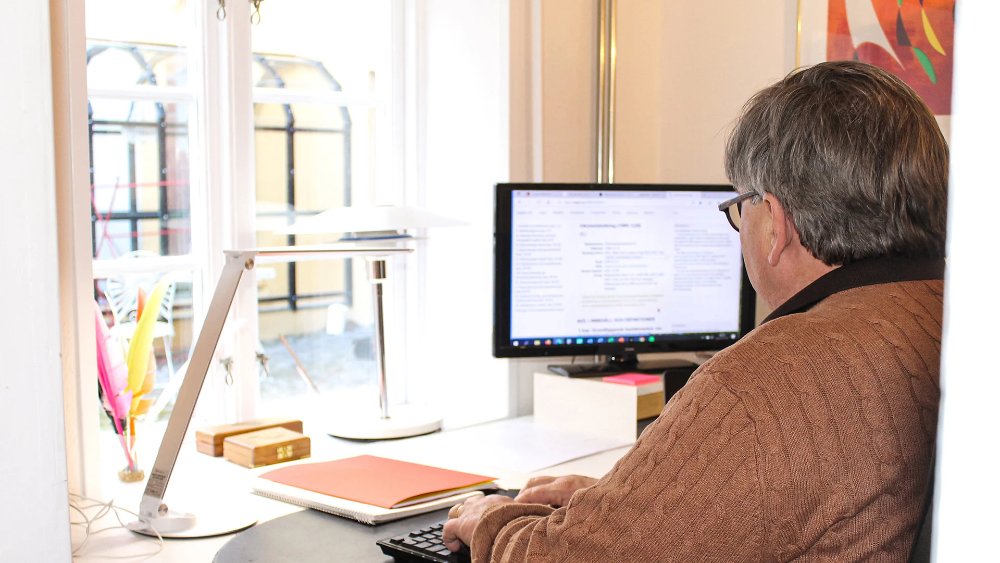

Skattefrågor med hela affären i fokus.
Vi hjälper företag och deras ägare att utreda skattefrågor, planera förändringar och föra sin talan i skatteprocesser.
Lindenlaw arbetar främst med små och medelstora företag och deras ägare. Vi biträder både i den löpande skattejuridiken och när en särskild transaktion behöver analyseras. Vid en skatterevision eller skatteprocess kan vi företräda dig som ombud.
Det här hjälper vi dig med.
- Skatteutredningar inför särskilda transaktioner
- Köp och försäljning av företag och fastigheter
- Generationsskiften
- Skatterevisioner och skatteprocesser
- Deklarationer och skatteplanering
Erfarenhet från flera perspektiv.
Bengt Åkessons bakgrund omfattar skatteförvaltning, länsrätt, rådgivning vid Price Waterhouse och Ernst & Young samt undervisning i skatterätt vid Högskolan Kristianstad.
